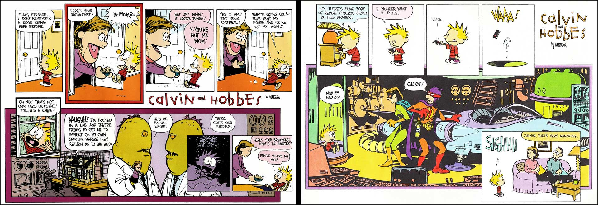

Calvin Got Me in Trouble
I remember this moment distinctly because it got me in trouble. It's also my first recollection of reading Calvin and Hobbes. I was in 8th or 9th grade in reading period. I hade rented this book from the library and was reading through it when I got to this strip. When I got to the orange panel, I just busted out laughing real loud. I promtly got yelled at by the teacher and the class was looking at me. I've been a fan ever since!
More of how just a single panel can make me actually laugh-out-loud.
I Can Only Imagine
 Calvin's imagination is the corner stone for the series. It springs forth a seemingly unlimited wealth of content. Hobbes himself, the proverbial ying to Calvin's yang, is brought to life by this. This line of imaginary friend is blurred quite often though, making the reality of Hobbes up for debate.